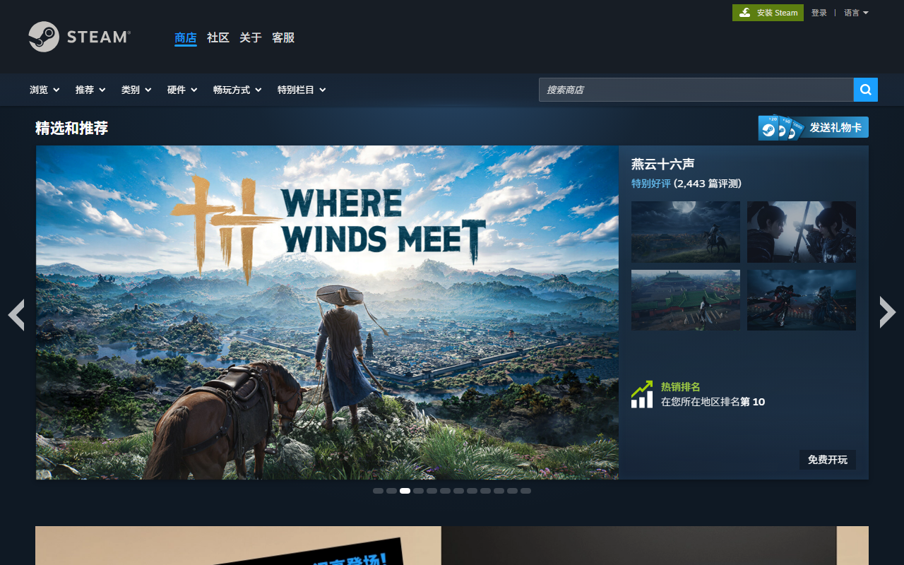
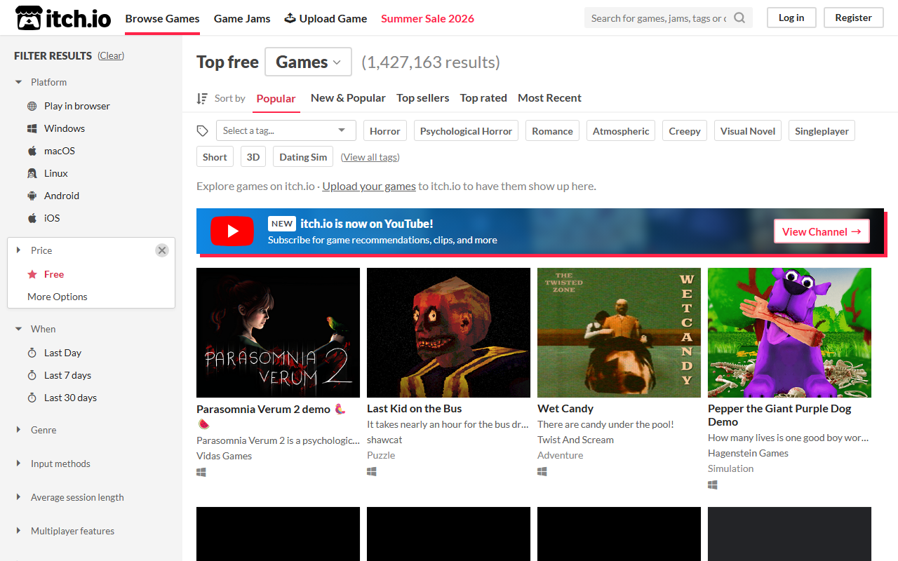
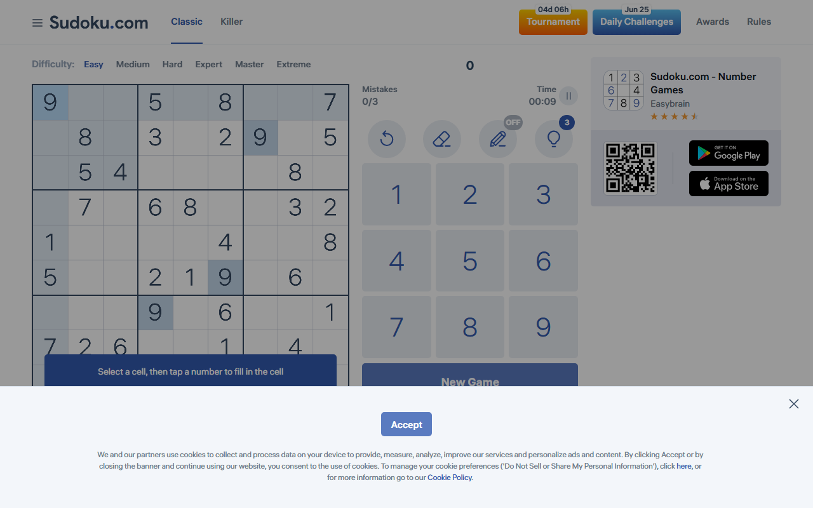

无标注样本
先只看这些原图，自己判断第一眼看到什么、主目标是什么、哪些东西干扰了目标。看完再打开 annotated.html 对照。
Sample A: Steam 首页
预设 intent：浏览商店推荐，判断当前主推游戏是否值得点进去。

Sample B: itch.io 免费游戏列表
预设 intent：浏览免费游戏，筛选或选择一个游戏卡片。

Sample C: Sudoku.com 数独页
预设 intent：进入解谜状态，找到棋盘、当前操作、下一步应该点什么。
